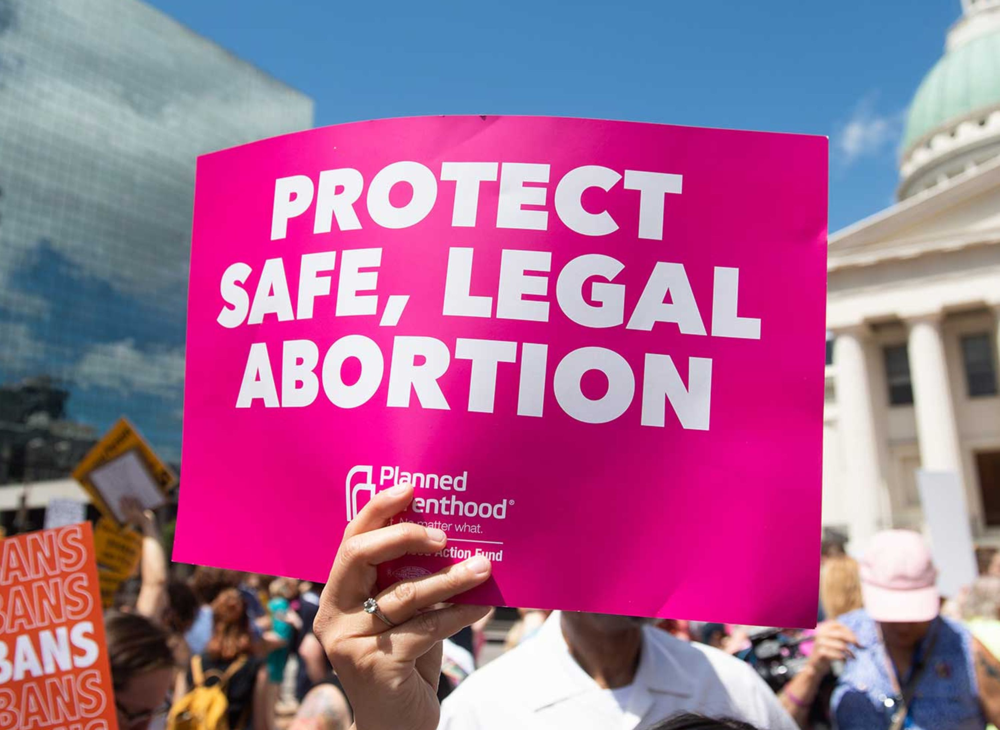
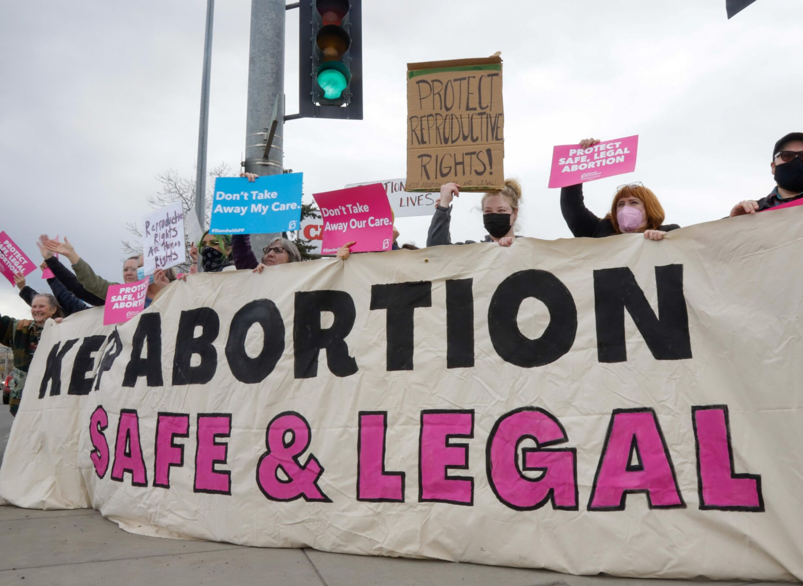
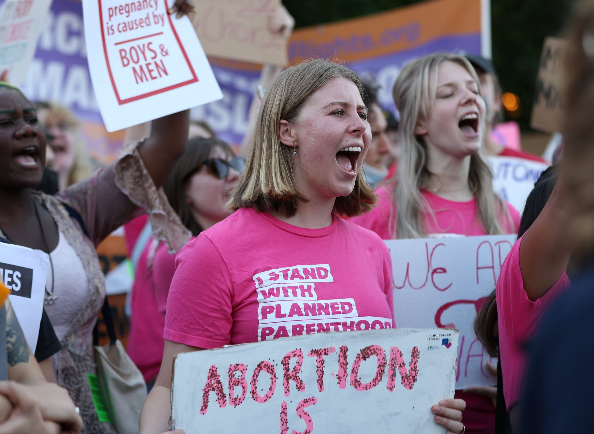
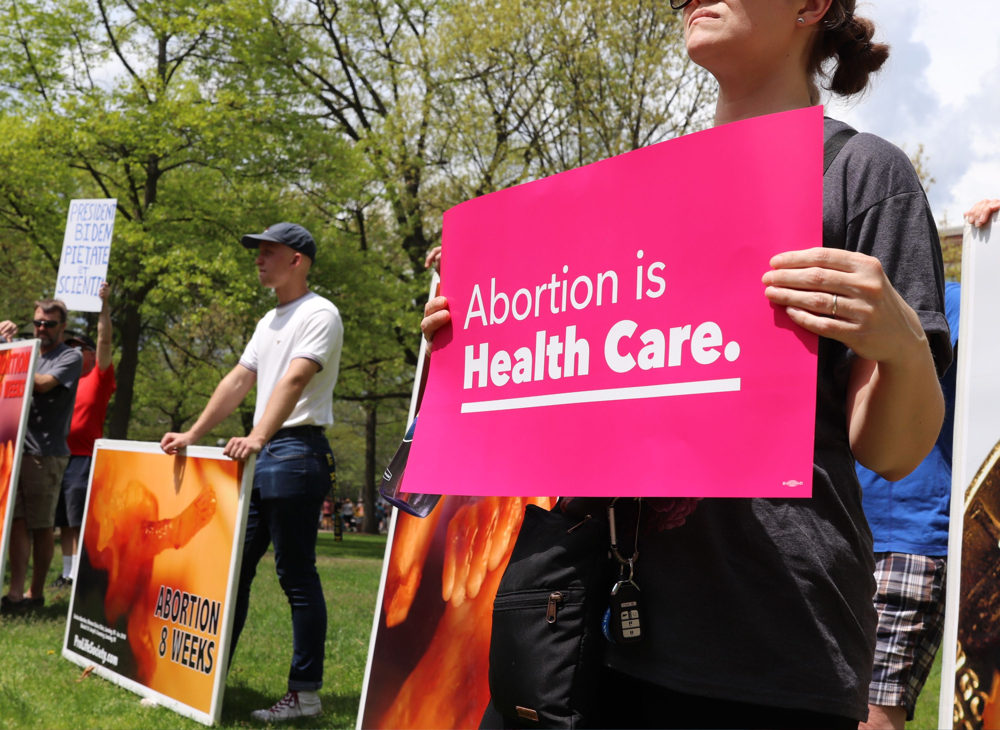

Why do People have Unsafe Abortions?
Home
Facts
Reasons
local laws that restrict abortion access

poor access to health services (i.e., not enough providers, clinics are too far away, high cost makes it unaffordable)

a lack of understanding or clarity about what the law allows

abortion discrimination and social stigma, making people feel that they can’t ask for help, shrouding abortion care in shame
needless requirements like mandatory waiting periods or medically unnecessary tests that delay access to care

a humanitarian crisis or conflict situation that hinders access to healthcare